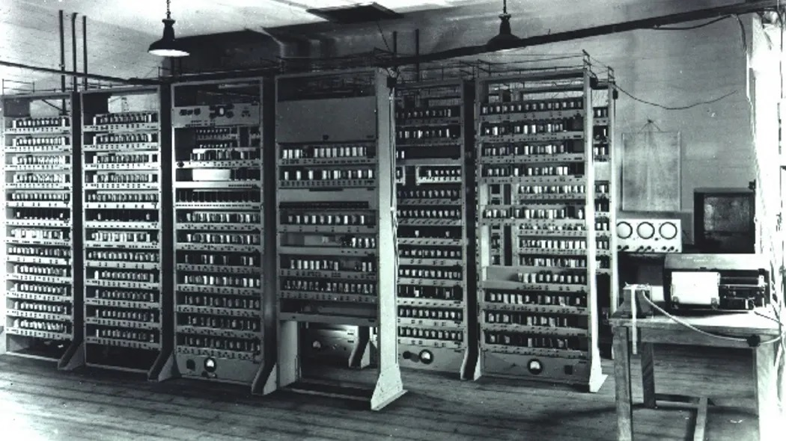

In realtà, la storia dell'informatica inizia molto prima dell'invenzione di Turing.
Infatti, possiamo considerare parte dell'informatica tutto ciò che viene usato per eseguire calcoli.
Ci sono molti strumenti per eseguire calcoli, ad esempio:
Durante il XIV secolo, due scienziati molto importanti iniziarono a lavorare ad un progetto che cambiò per sempre la storia dell'umanità:
Charles Babbage e Ada Lovelace, i due grandi scienziati che crearono il progetto della MACCHINA ANALITICA,
purtroppo senza realizzarlo mai.
ALAN TURING
Alan Mathison Turing è stato un matematico, logico, crittografo e filosofo britannico, considerato uno dei padri dell'informatica.
Il suo lavoro influenzò la nascita della disciplina dell'informatica, grazie alla sua formalizzazione dei concetti di algoritmo e
calcolo mediante la MACCHINA DI TURING.
L'ENIAC E VON NEUMANN

Nel 1944, un famoso matematico creò una tipologia di architettura hardware per computer digitali programmabili a programma memorizzato. Questo scienziato, John von Neumann, fu uno dei matematici e informatici più importanti del dopoguerra e inventò l'omonima architettura. Fu anche determinante per l'invenzione del primo computer chiamato ENIAC. Scopri di più su L'ARCHITETTURA DI VON NEUMANN.
L'EVOLUZIONE DEL COMPUTER
Durante la seconda metà del secolo scorso, l'evoluzione dell'informatica è stata costante, grazie alle invenzioni di Turing e Von Neumann, e alla ripresa economica post-bellica, che ha facilitato la diffusione dei computer nel mondo. I computer si sono evoluti diventando sempre più potenti, insieme allo sviluppo dei sistemi operativi e dei linguaggi di programmazione come C++ e Java. Grazie a queste innovazioni, sono nati i computer più piccoli, come gli smartphone.
Oggi, gli scienziati continuano a progettare computer ancora più potenti. Scopri di più su I COMPUTER QUANTISTICI.